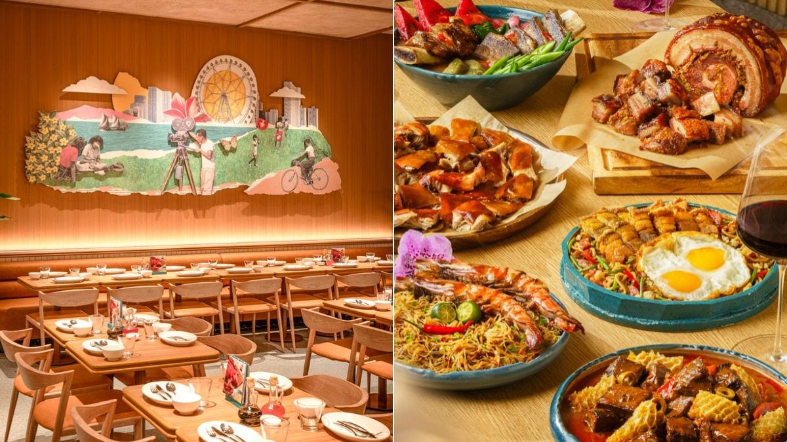

Manam opens its biggest restaurant yet at Mall of Asia
15 Nov 2026 · Esquire Philippines
Manam has reopened its SM Mall of Asia branch on the Ground Floor of the Entertainment Mall. The new space seats over 300 and is now its biggest store. It added private dining rooms that serve only Handaan Sets (Super Paboritos, Classic and Ultimate). Each set feeds 10 to 12 and starts at ₱9,000+++. The menu also has Watermelon & Tadyang Sinigang, first made at Hayop, Manam's Singapore spin-off, and Pasko Specials until 3 Jan 2027: Crispy Kawali Kare-Kare, Anghang Sarap Crispy Pata and Callos Caldereta. It's open 10 AM to 10 PM for dine-in, takeaway and delivery.
Operator read: Manam isn't adding branches here. It made one mall store bigger and timed the reopening for parties. Fixed sets for private rooms keep the kitchen predictable. The Singapore dish shows the overseas store also works as a test kitchen for the home menu. For an opener: before you sign a second lease, see if a bigger store with private rooms in a high-traffic mall would earn more from the same brand.